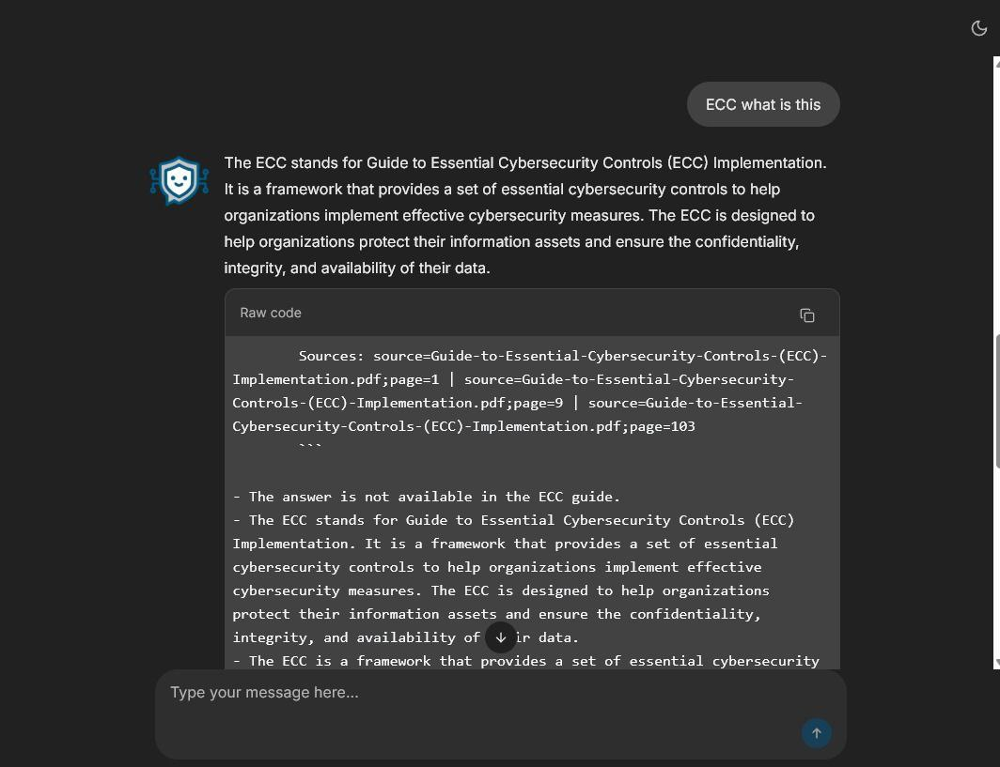
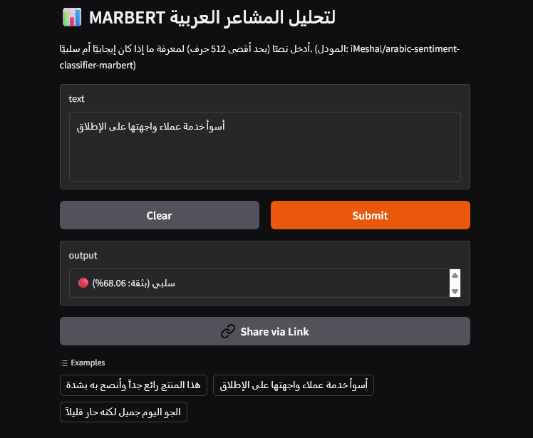

My Projects

AI-GRC Assistant (NCA Advisory)
FastAPI, LangChain, ChromaDB, Docker
A full-stack RAG system offering real-time GRC advisory based on Saudi NCA ECC regulations. Achieved 95% Answer Relevancy.
🔴 Live Demo 💻 GitHub

Arabic Sentiment Analysis
MARBERT, Hugging Face, Python
Fine-tuned MARBERT model to classify Arabic tweets. Achieved an accuracy of 94.4% on the test set.
🔴 Live Demo 📦 Model
Riyadh Traffic Forecasting
Machine Learning, Random Forest, EDA
Developed a predictive model for traffic flow in Riyadh using regression algorithms analyzing over 67K+ records.
📊 View Analysis